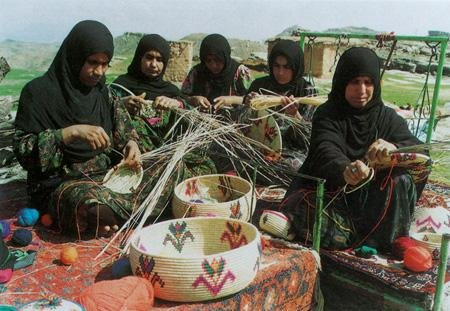
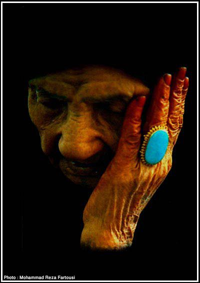
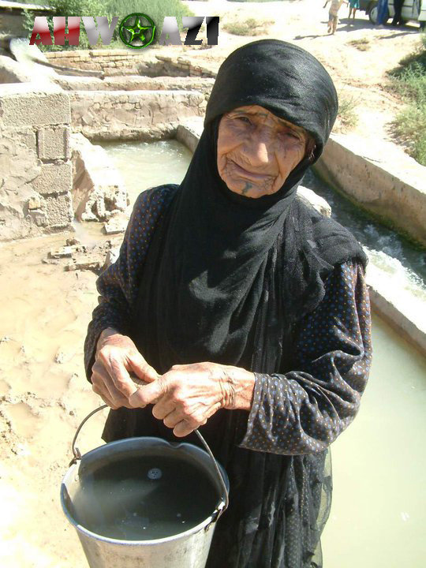

|
|

یوسف عزیزی بنیطرف: «نابرابری» وجه اشتراک جنبش ملیتهای غیرفارس با جنبش زنان
کاوه قاسمی کرمانشاهی
شنبه20 شهریور 1389
تغییر برای برابری / مجموعه ی کمپین از نگاهی دیگر : یوسف عزیزی بنیطرف از شهروندان عرب ایرانی است که هم اکنون در بریتانیا اقامت دارد. وی در دو حوزهی ادبیات و سیاست به فعالیت میپردازد. کارهای ادبی بنیطرف شامل مجموعهای از مقالات و پژوهشهای ادبی و فرهنگی، کتب شعر و داستان و ترجمه از عربی به فارسی میباشد. فعالیتهای سیاسی وی نیز بیشتر بر دفاع از حقوق ملی اعراب ایران متمرکز است. یوسف عزیزی از سال 1357 به عضویت کانون نویسندگان ایران درآمد و در آخرین مجمع عمومی این کانون به عضویت هیأت دبیران آن انتخاب شد. وی در نوامبر 2008 جایزه برگزارکنندگان سمینار "حقوق زن در ایران، آذربایجان و ترکیه" در استانبول، و در سال 2009 جایزه "هلمت ـ همت" دیدهبان حقوق بشر را دریافت نمود.
در گفتوگویی که با یوسف عزیزی بنیطرف به مناسبت چهارمین سالگرد کمپین یک میلیون امضاء برای تغییر قوانین تبعیض آمیز انجام دادهایم، وی بیش از آنکه صرفاً در مورد کمپین صحبت کند، عموماً به وضعیت زنان عرب و ستم مضاعفی که به واسطهی جنسیت و ملیت بر ایشان میرود پرداخته است. این فعال عرب همچنین از همکاری بین جنبشهای برابری خواه و لزوم توجه فعالان جنبش زنان، به ویژه در کمپین به وضعیت خاص زنان عرب در ایران سخن میگوید. گفتوگو با بنیطرف در ادامهی سلسله مصاحبهها با عنوان "کمپین از نگاهی دیگر" صورت گرفته و در کنار دیگر افراد مصاحبه شونده از طیفهای مختلف، این بار نظر یکی از فعالان حقوق ملی را جویا شدهایم.
در آغاز میخواهیم نظرتان را به عنوان یک فعال حقوق ملی در مورد بهکارگیری اصطلاحات "ملت"، "قوم" یا "اقلیت ملی" برای هممیهنان ترک، کرد، عرب، بلوچ و ترکمن در ایران بدانیم و اینکه مباحث و تعاریف این چنینی تا چه حد مردمحور هستند و نقش زنان در پرداختن به آنها چیست؟
از دوران مشروطیت و آغاز رواج اصطلاحات نوین سیاسی، اندیشمندان و فعالان حوزه سیاست، اصطلاح "ایران کثیرالمله" را به کار گرفتند. این اصطلاح نمود ذهنی واقعیت عینی چند ملیتی جامعهی ایران است. از دیرباز ملل و اقوام چندی در این سرزمین زیستهاند که شما به عمدهترین آنها در عصر حاضر اشاره کردید. ضمناً برخی از جامعه شناسان معتقدند که در ایران هیچ ملتی در اکثریت نیست و این کشور از مجموعهای از اقلیتها شامل: فارسها، ترکها، کردها، عربها، بلوچها، ترکمنها، لرها، بختیاریها، مازندرانیها، تالشها، گیلکها، ارمنیها و دیگران تشکیل میشود. مثلاً شما در این موزاییک ملی نمیتوانید ترکها یا فارسها را یک اقلیت بنامید.
قوم یک اصطلاح قدیمی و آرکاییک است و در زبان فارسی به گروههای انسانی کوچرو اطلاق میشود؛ مثل قوم مغول یا قوم تاتار. گرچه ترکها، کردها، عربها، بلوچها و ترکمنها از نظر جامعه شناسی سیاسی از ویژگیهای یک ملت برخوردارند، اما با توجه به اینکه هنوز به حقوق کامل سیاسی خود دست نیافتهاند و از حاکمیت ملی (حتا در حوزه ایران واحد فدرال) برخوردار نیستند، لذا برای پرهیز از تداخل اصطلاحات سیاسی در عرصهی ملی و بینالمللی، به منظور تعریف ملل غیرفارس در ایران از واژههایی همچون "ملیت"، "خلق" یا "قومیت" استفاده میشود.

از آنجا که ایران همچون دیگر جوامع شرقی یک جامعهی مردسالار است، در بسیاری از عرصههای اجتماعی و سیاسی، مردان بیش از زنان در حوزهی نظری فعالیت کردهاند. اما در یکی دو دههی اخیر نقش زنان ملیتهای ستمدیده در فرایند کوشش برای دستیابی به برابری حقوقی با ملت مسلط، بیشتر شده است. ما این را در سالهای آزادیهای نسبی دوره ریاست جمهوری محمد خاتمی و شکوفایی مبارزه این ملیتها در میان عربها، کردها، ترکها و سایر ملیتها مشاهده کردیم. حتا در سالهای اخیر که با سرکوب و زندان و اعدام مشخص میشود، ما ردپای زنان فعال کرد، ترک و عرب را در سازمانهای سیاسی و مدنی و در زندانها و حتی پای چوبههای دار میبینیم. من درباره بلوچها و ترکمنها اطلاعات دقیقی ندارم و نمیتوانم نظر بدهم اما بعید میدانم که زنان این دو ملیت در عرصههای مبارزه برای دستیابی به حقوق ملی حضور نداشته باشند.
آیا بین نیازها و خواستهای زنان این ملیتها که عموماً هم در مناطق مرزی و حاشیهایی کشور سکونت دارند با دیگر زنان هموطنشان در مرکز تفاوتی وجود دارد؟ مسائل و مشکلات خاص این زنان، به ویژه زنان عرب را چه میدانید؟
شما واژه "مرکز" را به کار گرفتید که اصطلاح جامعه شناسیک خوبی است و البته از نظر مفهوم علمی صرفاً جنبهی جغرافیایی ندارد. مثلاً در سطح جهانی ما "مرکز" یعنی اروپا و آمریکا و پیرامون یعنی جهان سوم را داریم. در ایران نیز در برابر "مرکز" یعنی پایتخت و چند شهر نورچشمی، پیرامون قرار میگیرد که همان مناطق ملیتهای غیرفارس هستند. اگر نه همهی جمعیت این ملیتها تنها در حاشیهی ایران سکونت ندارند و به نوعی در سطح ایران پراکندهاند.
تفاوت زنان ملیتهای غیرفارس با زنان فارس این است که آنان افزون بر نابرابری جنسیتی برخاسته از تبعیض جنسی (که وجه اشتراکشان با زنان فارس است) از نابرابری ملی (قومی) نیز رنج میبرند. یعنی آنان همچون مردان ترک و عرب در معرض تبعیض نژادی و یا همچون لر و گیلک در معرض تحقیر قومی هستند. دوستی در این زمینه میگفت "باید یک زن یا یک عرب باشی تا بدانی ستم وارده بر یک زن یا یک عرب در ایران چیست". حال اگر زن عرب باشی، این ستم و تبعیض دو برابر میشود.
زن غیرفارس همچون مرد غیرفارس از همان دوران کودکی مفهوم تبعیض را حس میکند، زیرا نظام فارس سالار او را از ابتداییترین حقوق انسانی خود یعنی آموزش به زبان مادریاش محروم میکند. و او از این بابت زجر میکشد و رنج میبرد. کودک غیرفارس ـ چه پسر و چه دختر ـ مجبور است در کلاس اول ابتدایی علاوه بر الفبای فارسی زبان دومی را نیز یاد بگیرد که همان زبان فارسی است. در صورتی که همگنان فارس وی فقط الفبای زبان خود را میآموزند. از این رو از همان آغاز مسابقهی زندگی وزنهای را به گردن کودک غیرفارس میآویزند و امتیازی را به همکلاسی فارسش میدهند که باعث اختلال در سیستم زبانی و مغزی وی میشود. وی دچار عقب ماندگی زبانی و در نتیجه عقب ماندگی فرهنگی و اجتماعی میشود. این عقب ماندگی عمدی است و در واقع نوعی عقب نگه داشتن است. این همان نقطهی آغازین نابرابری ملی است.
زن غیرفارس بعدها این تبعیض را ـ به موازات تبعیض جنسی ـ در دیگر عرصههای اجتماعی و فرهنگی و اقتصادی و سیاسی لمس میکند. اینجاست که ستم ملی تبلور مییابد و زنان ملیتهای غیرفارس همچون مردان، ضرورت برابری زبانی، فرهنگی و سیاسی را با پوست و خونشان احساس میکنند. البته باید گفت که در این زمینه در میان خود ملیتهای غیرفارس نیز تفاوتهایی وجود دارد. مثلاً قید و بندهای سنتها بر دست و پای زنان بلوچ ـ شاید ـ بیشتر از زنان عرب و نزد اینان بیش از زنان کُرد و آذربایجانی است. یا بهتر بگوییم میزان رهایی از زنجیرهای سنتی در میان اینان بیش از آنان است.

«سنت» را قید و بندی بر دست و پای زنان عنوان کردید. فکر میکنید ساختار تبعیضهای جنسیتی بیشتر ملهم از سنتهای غلط رایج در جامعه است یا ناشی از قوانین وضع شده توسط حکومت؟
ساختار تبعیضهای جنسیتی در درجهی نخست ملهم از عرف و سنتهای جامعه است که اصولاً قوانین بر اساس آنها ساخته و پرداخته میشوند. سنتهای غلط، همان غل و زنجیری است که زن را برده شرایط موجود میکند. وی بر اثر این سنتهای پوسیده به موجودی منفعل تبدیل میشود که شرایط فلاکت بار خود را ناشی از قضا و قدر میداند. اما اگر این سنتها تضعیف شود زن میتواند راحتتر با قوانین زن ستیز مبارزه کند و برای تغییر آنها بکوشد. شما حتماً ماجرای زن عرب یکی از روستاهای اهواز را به یاد دارید که در اردیبهشت 86 با پای خود به گور رفت! پدر وی که از صحبتهایی که در روستا درباره روابط جنسی دخترش گفته میشد به ستوه آمده بود، او را شبانه با خود به گورستان برد. زن با دست خود به پدر کمک کرد تا گور کنده شود و سپس در لحد دراز کشید و سرنوشت سیاه خود را پذیرفت. تنها وصیتش به پدر مواظبت از دختر کوچکش بود.
این حادثه در قرن بیست و یکم و در جمهوری اسلامی ایران رخ داده است. در اینجا علاوه بر سنتهای غلط، حاکمیت نیز شریک جرم است. زیرا اجازه نمیدهد زنان و مردان روشنفکر عرب با تشکیل سازمانهای مدنی ویژه زنان به زبان همان مردم با تودههای مردم صحبت کنند و فرهنگ و آگاهیهای اجتماعی آنان را بالا ببرند. حاکمیت مردم را از داشتن نهادهای مدنی، روزنامه و رسانه و هر وسیله روشنگری دیگر ـ به زبان مادریشان، یعنی عربی ـ محروم کرده است. خود نیز جز ترویج خرافات و بازتولید سنتهای غلط گذشته هیچ کاری انجام نمیدهد. متأسفانه فعالان زن و حرکتهای سراسری زنان نیز تا کنون نتوانستهاند برای حل این مشکلات گامی در جهت نزدیکی به زنان عرب اهوازی بردارند.
شما دلیل بیتوجهی فعالان زن در مرکز به وضعیت خاص زنان عرب یا بلوچ و نیز عدم اعتراض جمعی زنان این مناطق و همراهیشان با حرکتهای برابری خواهانهی سراسری را چه میدانید؟ مثلاً اگر در اینجا کمپبن یک میلیون امضا را به عنوان گستردهترین حرکت سراسری زنان طی سالهای اخیر در نظر بگیریم. با توجه به سابقهی فعالیت 4 سالهی آن، در حالی که فعالان کمپین در آذربایجان و کردستان توانستهاند همپای دیگر کنشگران این حرکت در سراسر ایران فعالیتهای چشمگیری در مناطق خود داشته باشند. اما متأسفانه کمترین نشانهای از حضور و فعالیت زنان عرب و بلوچ و ترکمن در کمپین دیده میشود.
هر چند من فکر نمیکنم فعالان کمپین در آذربایجان و کردستان همپای دیگر کنشگران در تهران یا سایر مناطق مرکزی ایران باشند، ولی این را درست میدانم که فعالیت زنان ترک و کُرد قابل قیاس با فعالیت زنان عرب و بلوچ یا ترکمن نیست و از آنها جلوتر است.
عوامل چندی در این زمینه نقش دارند: نخست جمعیت. یعنی جمعیت ترکها و کردها از سه ملیت یاد شده بیشتر است. دوم سابقه مبارزاتی. بیگمان همه خلق های غیرفارس دارای تاریخ مبارزاتی درازی علیه ستم ملی هستند. آنان در این هشتاد و اندی سال بارها شاهد قیامها و خیزشهای مختلف ـ و حتا خونین ـ برای دستیابی به حقوق ملی خود بودهاند، اما پیکار ترکان و کردان منظمتر و سازمان یافتهتر از نبرد عربها و ترکمنها و بلوچها بوده است. ترکها و کردها به علت جمعیت بیشتر و طبعاً فعالان فزونتر و نیز نزدیکی به پایتخت ـ در قیاس با عربها و بلوچها ـ توانستهاند ادبیات خود را به جنبشهای به اصطلاح سراسری تحمیل کنند. در این زمینه نباید نقش مذهب و همان سنتهای دست و پاگیر قبیلهای را فراموش کرد که با جان سختی به حیات خود ادامه میدهند. این سنتهای زن ستیز در میان عربها و بلوچها و ترکمنها ـ بیش از سایر ملیتها ـ مانع اصلی مشارکت زنان در فعالیتهای اجتماعی است.
به اینها باید فضای شدیداً امنیتی در اقلیم اهواز (خوزستان) و سیستان و بلوچستان را اضافه کنیم. نیز دیدگاه برخی از فعالان زن مرکز نشین را هم نباید فراموش کرد که به علت پیشداوریهای مذهبی یا نژادی علاقهای به کار در میان زنان بلوچ یا عرب ندارند. به ویژه رسوبات ضدعربی که ریشه در تاریخ و جغرافیا دارد و آگاهانه یا ناآگاهانه در ذهن برخی از زنان فعال فارس وجود دارد باعث میشود که این فعالان رغبتی به کار در میان زنان عرب نداشته باشند. اگر هم به آن استان میروند صرفاً با زنان اقلیت فارس تماس میگیرند. ارتباط با تودههای زنان عرب نیاز دارد که فعالان کمپین یک ملیون امضا یا هر تشکل و حرکت دیگر زنان با زنان آگاه و روشنفکر عرب که فارسی میدانند ارتباط برقرار کنند تا اینان واسطهی تماس با تودههای زنان عرب شوند. زیرا تماس با زنان عرب نیاز به دانستن زبان آنان دارد. فراموش نکنیم که نوعی بیاعتمادی قومی نیز وجود دارد.
به نظر میرسد کمپین یک میلیون امضا با توجه به شرایط سیاسی و فشارهای جناحهای تندرو حاکمیت و لایههای سنتی و مذهبی متعصب جامعه، در ابتدای کار چارهای جز طرح حداقلی مطالبات زنان را نداشته است. و البته فقط بدین وسیله میتوانست طیف وسیعی از جامعه زنان و هوادارانشان را زیر پرچم خود گرد آورد.
شما میدانید که برخی از افراد، درکی از مسالهی زنان یا ملیتهای غیرفارس ندارند و تکیه کلامشان این است که بر همه مردم ایران به یکسان ستم میرود. اینان درکی از ستم ملی و ستم جنسی ندارند که باید سعی کرد این مفاهیم را برای بخشهای گستردهتری از مردمان جامعهی ایران توضیح داد.
اما پرسش و انتقاد جدی که مطرح میشود این است که آیا فعالان زن و کمپین یک میلیون امضا خبری از زندانیان زن عرب در زندانهای اهواز و خارج از اهواز دارند؟ آیا این فعالان میدانند که در سال 2006 (1385 ش) طبق گزارش سازمانهای حقوق بشر اهوازی و بینالمللی، نیروهای امنیتی، همسران چهار زندانی سیاسی عرب اهوازی و کودکانشان (معصومه کعبی و فرزند 4 سالهاش عماد؛ هدی هواشم و دو فرزند 4 ساله و دو سالهاش احمد و اسامه؛ صغری خضیراوی و فرزند 4 سالهاش زیدان؛ فهیمه اسماعیلی و سکینه نیسی) را دستگیر کردند تا شوهرانشان را وادار به اعتراف کنند که بگویند دست به فعالیتهای تروریستی زدهاند؟ در این میان خود فهیمه اسماعیلی نیز پس از اعدام همسرش به 15 سال حبس محکوم شد.
در واقع ما در برخورد فعالان تشکلهای به اصطلاح سراسری زنان شاهد رفتاری هستیم که حتا در برخورد با زنان ملیتهای غیرفارس، برخی را خودیتر از دیگران میدانند. البته افشاگری درباره زنان زندانی کرد و آذربایجانی توسط آنها درست و به جاست اما باید این نگاه شامل دیگر زنان ملیتهای ستمدیده نظیر عربها هم بشود. متأسفانه فعالان زن و کمپین نه تنها از این امور آگاه نیستند بلکه هیچ کوششی برای اطلاع از سرنوشت سخت و دشوار این زنان زندانی سیاسی انجام ندادهاند. آنان از وضع اجتماعی و فرهنگی زن عرب اهوازی هم شناختی ندارند.
اخبار رسانهای حاکی از رقم بالای خشونتهای ناموسی در مناطق عرب نشین ایران است. به عنوان یک فعال عرب دلایل عمده این خشونتها را در چه میبینید و به نظرتان فعالان حقوق زن به ویژه فعالان کمپین یک میلیون امضا که شبکه ارتباطی بزرگتری با فعالان شهرهای مختلف دارند چه نقشی میتوانند در کاهش این خشونتها داشته باشند؟
خشونتهای ناموسی ـ البته ـ در جاهای دیگر ایران هم وجود دارد اما به نظر میرسد که در مناطق عرب نشین بیشتر است. گرچه دادگستری اهواز هر از گاهی آمارهایی ارایه میدهد اما میزان درستی این آمارها مشخص نیست و حتا گاهی مردم عرب فکر میکنند که حاکمیت در این زمینه برای بدنامی آنها این آمارها را منتشر میکند. آنان میپرسند چرا دادگستری اهواز آمارهای مربوط به درگذشتگان ناشی از آسم و سکته و سرطان و بیماریهای خاص زنان را اعلام نمیکند که بالاتر از میانگین کشور است. مردم عرب میدانند که با وجود گذشت بیش از بیست سال از پایان جنگ ایران و عراق و هفت سال از حمله آمریکا و متحدانش به عراق، این مردم عرب اقلیم اهوازند که هنوز قربانی میدهند، زیرا آب و هوا و خاک استانشان بر اثر این دو جنگ همچنان آلوده است. نیز با سدهای فراوانی که بر کارون و کرخه بستهاند رودخانههای استان دچار بیآبی شدهاند. تلفات ناشی از برخورد زن و مرد و خرد و کلان با مینهای باقی مانده از جنگ با عراق هم حکایت دردناک دیگری دارد.
در اینجا، تعصبها و سنتهای قبیلهای نقش منفی بازی میکنند. هشت سال جنگ خانمان برانداز ایران و عراق باعث کوچ هزاران روستایی و هورنشین عرب به شهرهای بزرگ، به ویژه شهر اهواز گردید. اینان به جای این که فرهنگ شهری را بپذیرند فرهنگ روستایی و عشایری خود را ترویج کردند. این مهاجرتها بازگشتی در پی نداشت زیرا بخشی از این مردم به علت ممانعت سپاه پاسداران نتوانستند به روستاهای خود ـ به ویژه در مناطق مرزی ـ برگردند. به اینها هزاران خانواده روستایی را اضافه کنید که طی پروژه عرب زدایی، صدها هکتار از زمینهایشان در دو سوی رودخانه کارون ـ از شوشتر تا خرمشهر (محمره) ـ توسط حکومت تهران غصب شد تا پروژه شدیداً سیاسی و ورشکسته "توسعه نیشکر کارون" را به اجرا درآورند. این خانوادههای عرب، لشکر بزرگ ساکنان حلبی آبادهای حاشیه شهرهای بزرگ را تشکیل دادند. شما به همین شهر اهواز یعنی مرکز استان نگاه کنید، در حالی که اقلیت غیر عرب و مهاجر در محلههای مرفه و با امکانات مدرن و با حمایت مستقیم و غیرمستقیم دولت زندگی میکنند، تودههای عرب در محلههایی میزیند که از کمترین شرایط انسانی برخوردار است. در این حالت زنان و دختران مهمترین قربانیان فقر و اعتیاد و فلاکت هستند.

تازگیها نیز اعتیاد به مواد مخدر مرز مردانه خود را شکسته و در میان زنان عرب در حال گسترش است. گفتنی است که استان خوزستان یکی از بالاترین استانهای دارای جمیعت معتاد در کشور است. بیگمان دستهای بخشهایی از حاکمیت در ورای توزیع هر چه بیشتر مواد مخدر در میان عربها قرار دارد و اکنون با توزیع آن در میان زنان عرب زمینه را برای گسترش هر چه فزونتر بزهکاریها در میان زنان آماده کرده است. اینان قصد دارند با این کارها زنان و مردان عرب را منفعل کنند تا هیچ کاری برای رهایی از ستم ملی و جنسی انجام ندهند.
دامنه وسیع بیسوادی در میان زنان عرب را نیز باید به عواملی اضافه کنیم که باعث میشود بخشهای گستردهای از این زنان به حقوق انسانی خود آگاهی نیابند. طبق تحقیقات میدانی که نگارنده چند سال پیش انجام دادم میزان بیسوادی در میان زنان عرب بیش از 35 سال به حدود 90 ـ 95 درصد میرسد. اکنون اگر پیشرفتی در این عرصه انجام گرفته بعید میدانم که این نسبت تغییر چندانی کرده باشد. نیز نسبت بیسوادی در میان زنان عرب کمتر از 35 سال در سال 1373 شمسی (1994م) حدود 65 درصد بود. یعنی در آن سال فقط 35 درصد از زنان عرب میتوانستند فارسی صحبت کنند.
شمار دختران عرب مشغول به تحصیل در دانشگاهها نیز بسیار پایین است و با میزان جمعیت عربها تناسبی ندارد. البته شمار پسران عرب مشغول به تحصیل در دانشگاههای استان و ایران نیز نسبت به جمعیت عربهای ایرانی، پایین است. اگر هم اکنون یک ملیون و چهارصد هزار دانشجو در ایران داشته باشیم، حدود 700 نفر از آنان عرب اهوازی هستند. و من احتمال میدهم فقط یک چهارم اینها دانشجوی دختر عرب اهوازی هستند.
عربها پیرامون هفت تا هشت درصد جمیعت ایران را تشکیل میدهند اما سهم آنان در دانشگاههای کشور فقط پنج صدم درصد است و البته سهم دانشجویان دختر عرب حدود یک چهارم این رقم است. این بدان معناست که هم اکنون از هر ده هزار دانشجو در ایران 5 نفرشان عرب هستند (که 1.2 نفرشان دخترند). اما در صورت وجود یک نظام عادلانه و عاری از تبعیض نژادی، میبایست در برابر هر ده هزار تن دانشجوی ایرانی 600 دانشجوی عرب اهوازی داشته باشیم.
به نظر من اساسیترین و نخستین متهم نابهنجاریهای اجتماعی و خشونت علیه زنان عرب خود حکومت است. حکومت با عدم اجرای اصل 15 و 19 قانون اساسی و عدم تدریس زبان عربی در دوره ابتدایی عامل اصلی گسترش بیسوادی گسترده در میان عربها ـ و به ویژه در میان زنان ـ است. از اینها گذشته بسیاری از روستاهای عرب نشین حتا مدرسه ابتدایی ندارند. ضمناً عدم اعطای مجوز به زنان عرب برای تشکیل سازمانهای فرهنگی و مدنی خاص خود ـ حتا در دوران ریاست جمهوری آقای خاتمی ـ یکی از عوامل عقب نگه داشتن زنان عرب و رواج خشونت علیه آنان است. من خود شاهد بودم که چگونه شماری از زنان فعال عرب در دوران حکومت اصلاح طلبان سالها به دنبال مجوز برای یک سازمان یا جمعیت ویژه زنان عرب بودند اما هیچگاه موفق به دریافت مجوز نشدند. بیگمان بستن فضای سیاسی و محدویتهای فوقالعاده اجتماعی برای زنان عرب زمینه را برای عقب نگه داشتن آنان فراهم کرده است.
شما وضعیت زنان عرب اهوازی را با وضعیت زنان همقومشان در کویت و قطر و امارات مقایسه کنید تا ببینید تفاوت از زمین تا آسمان است. در این کشورها نه تنها خشونتهای ناموسی در درجهی بسیار پایینی است و قابل قیاس با خشونت علیه زن عرب اهوازی نیست، بلکه زنان ـ به خصوص در کویت ـ به نمایندگی پارلمان و ریاست دانشگاه و مدیرکلی ادارات و وزارتخانهها رسیدهاند یا در عرصه هنر و موسیقی و تئاتر و ادبیات نقش به سزایی ایفا میکنند. هم اکنون چندین رمان نویس و هنرپیشه تئاتر و شاعر و نماینده پارلمان زن در کویت بغل دستی ما وجود دارند و ما نه تنها هیچ کدام از آنها را نداریم بلکه وضع زن عرب اهوازی ما، همانی است که در سطور پیشین تشریح شد.
فعالان زن و به ویژه کمپین برای کمک به رفع این خشونتها باید دیوار بلند جدایی میان خود و زنان عرب اهوازی را در هم بشکنند و ـ اگر میتوانند ـ سعی کنند برای آنان کمپینها و گروههای ویژهای تشکیل دهند که وسیله ارتباطیاش زبان عربی باشد. شاید این امر در بلوچستان هم جواب دهد. من ـ البته ـ نمیدانم امکانات کمپین یک ملیون امضا تا چه حد است و چقدر میتواند در این گستره فعالیت کند. به هر حال اینها راهکارهایی است که با کاربرد آنها میتوان شکاف میان جنبشهای زنان در مرکز و زنان پیرامون در مناطق ذکر شده را کم کرد.
نظری که بعضاً از طرف برخی از فعالان حقوق ملی عنوان میشود، اولویت حل مسئلهی ملی نسبت به مسئلهی زنان و دیگر مسائل اجتماعی است. آیا شما، به عنوان یک فعال عرب که در زمینهی حقوق ملی فعالیت دارید، قائل به این نوع اولویت بندی هستید؟
این دیدگاه هم درست است و هم نادرست. به نظر من اولویتبندی در این زمینه، موضوع را ساده میکند. زن وقتی زبانش در زنجیر باشد و از امتیاز "وابستگی به زبان رسمی" برخوردار نباشد چگونه میتواند مطالبات زنانهی خود را بیان کند و برای حقوق ویژه خویش مبارزه کند. ملیونها زن غیرفارس ـ چه عرب، چه ترک؛ و چه کُرد و ترکمن و بلوچ ـ اصلاً فارسی بلد نیستند تا بتوانند حقوق ابتدایی خود را مطالبه کنند. درست است که به زن فارس هم ظلم میشود اما حداقل زن فارس، اگر جرمی ـ جرم از نظر حاکمیت ـ مرتکب شد میتواند در دادگاه یا در رسانهها یا ادارات دولتی یا هر تریبون دیگری از خود دفاع کند اما زن بیزبان غیرفارس از این هم محروم است. این بخشی از ستم ملی است که بر ستم جنسی مشترک با زن فارس افزوده میشود.
حتماً اظهارات اخیر محمد مصطفایی وکیل سکینه محمدی آشتیانی را خوانده یا شنیدهاید که گفته است موکلم در دادگاه به علت ترک بودن از فهم اصطلاحات حقوقی و کلاً سخنانی که مطرح میشد عاجز بود و این سبب تشدید مجازات وی گردید. به راستی سکینه محمدی چه گناهی کرده است که ترک به دنیا آمده است؟ شما مطمئن باشید هزاران سکینه محمدی آشتیانی در مناطق عرب نشین و ترک نشین و کرد نشین و ترکمن نشین و بلوچ نشین وجود دارند که هیچ کس خبری از آنها ندارد و البته حتماً هم نمیبایست جرمی شبیه سکینه محمدی آشتیانی مرتکب شده باشند. این زنان غیرفارس چون زبان رسمی را نمیدانند هم قربانی جرم تحمیلی دادگاه میشوند و هم چوب عدم درک زبان فارسی را میخورند زیرا نمیتوانند از حقوق خود به این زبان دفاع کنند. و این بی عدالتی مضاعف ـ هم در توجیه اتهام به زن غیرفارس و هم در عدم تکلم به زبان مادری در دادگاه ـ ناشی از نابرابری مضاعف جنسی و ملی زنان غیرفارس است که قاعدتاً باید با دیگر شهروندان فارس ـ یا دستکم با زنان فارس ـ متساوی الحقوق باشد.
بنابراین منطقیتر آن است که زنان آگاه ملیتهای غیرفارس ضمن مشارکت در جنبش این ملیتها برای دستیابی به حقوق زبانی، فرهنگی و سیاسی، به طور همزمان، و در درون همین جنبشها، یا همراه با سازمانهای سراسری زنان برای رهایی از تبعیض جنسی مبارزه کنند و البته این مسوولیتی سنگینتر از مردان را بر دوششان میگذارد. منظور من از سازمانهای سراسری، سازمانهایی است که از شائبه های شووینیستی و عرب ستیزی و ترک ستیزی به دور باشند. زنان فعال غیرفارس در این عرصه باید از همنوایی و مساعدت مردان معتقد به حقوق زنان جنبشهای ملیت ها و نیز سازمان های سراسری زنان برخوردار شوند وگرنه فاصله میان آنان و زنان فعال فارس بیشتر خواهد شد و این به زیان همهی زنان کشور ماست.
آنطور که من از بخش نخست پاسختان متوجه شدم شما نیز قائل به اولویت بندی هستید و حل مسئلهی ملی را مقدم بر مسئلهی زنان میدانید با این توجیه که اگر زن زبانش در زنجیر باشد نمیتواند مطالبات خود را بیان کند. ولی در پایان از همزمانی مبارزه برای رفع ستم ملیتی و جنسیتی سخن گفتید. میخواهم مشخصا و واضح نظرتان را در این مورد بدانم که به باور شما حل مسئلهی ملی مقدم و حل مسئله زنان موخر است؟
من در این عرصه به اولویت بندی اعتقادی ندارم. من به همزمانی این دو نوع مبارزه باور دارم. در عین حال مشکل زنان عرب (و بلوچ و ترکمن و...) را هم پیشتر مطرح کردم و گفتم که اکثریتشان فارسی نمیدانند تا به کمپین یا تشکلهای سراسری زنان بپیوندند و اصولاً هیچ ارتباطی میان آنان و زنان تهرانی یا اصفهانی یا شیرازی وجود ندارد چون زبان همدیگر را نمیفهمند و اساساً اکثریت زنان ملیتهای یاد شده در شرایط و دورانی متفاوت با زنان تهرانی یا اصفهانی زندگی میکنند و مطالبات اولیهی آنان با مطالبات زنان فعال در کمپین تفاوت دارد. مهمترین خواسته یک دختر عرب اهوازی ـ فرضاً ـ این است که به خاطر کوچکترین شک و گمان برادر یا پدر کشته نشود. یا اینکه قانون سنتی و ستمگرانه "نهوا" گریبانگیر او نشود.
بنا بر این ده مورد قانونی که کمپین به آنها اعتراض دارد از دیدگاه این زن، شاید مطالبات بعدی اوست. از این رو فعالان کمپین باید به مطالبات خاص زنان ملیتهای غیرفارس توجه کنند و با این نوع زن ستیزی ـ که خشن و ضد انسانی است ـ نیز مبارزه کنند. منتهی راه ساده را انتخاب نکنند و همه چیز را به گردن سنتها نیندازند. من باز هم تکرار میکنم، کمپین باید به فرآیند "عقب نگه داشتن" این زنان و کل قومیت عرب از سوی هیات حاکمه ایران توجه کند و از حاکمیت بخواهد جلوی نشر آگاهی در میان زنان عرب را نگیرد. ضمن اینکه سنتهای مذموم زن ستیز در میان ملیتها هم باید نقد شود. من به برخی از این موارد در جای جای این گفتوگو اشاره کردهام. لذا این گونه فعالیتها نیاز به نوعی توازن در تکامل اجتماعی دارد که هم اکنون موجود نیست. به نظر من با پیشقدم شدن فعالان زن کمپین و ارتباط آنان با زنان فعال و آگاه عرب میتوان راه حلی برای این معضل یافت. من در باره زنان بلوچ اطلاعات چندانی ندارم. اما در دوره اصلاحات شاهد فعالیت زنان عرب و ترکمن در تهران بودم. در اهواز هم زنان عرب در عرصههای سیاسی و اجتماعی فعال بودند و توانستند در این زمینه نقش خود را ایفا کنند. آنان همواره با موانع دستگاه های امنیتی رو به رو بودهاند. اگر در آن دوران از همیاری سازمانهای واقعی زنان برخوردار میشدند شاید ما اکنون شاهد حضور زنان عرب بیشتری در عرصه نبرد برای دستیابی به حقوق خود میبودیم. البته احزاب محلی ـ نظیر حزب الوفاق که دارای پایگاه مردمی وسیعی بود ـ نیز کوششهایی برای جذب نیروی زنان انجام دادند که اگر حاکمیت میگذاشت این حزب محلی به کار خود ادامه دهد شاید وضع سیاسی و اجتماعی مردم عرب ـ و از جمله زنان ـ از امروز بهتر بود. زنان عرب در نهادهای فرهنگی و مدنی فعالیت داشتند اما تا خواستند خودی نشان دهند با برآمدن جناح راست تمامیت خواه و غلبهاش بر حاکمیت رو به رو شدند.
شما شاید ندانید که در دومین دوره شورای شهر اهواز، که مردم عرب این شهر هر نه نماینده شورای شهر را از میان خود بومیان عرب انتخاب کردند، چهار تن از این نمایندگان منتخب مردم، از زنان عرب بودند که یکی از آنان مدرک دکترا داشت. لذا هرگاه فضای سیاسی باز شده و مردم توانسته اند اکسیژن دموکراسی را استنشاق کنند هم زن و هم مرد عرب بهره برده اند. در این فضا، سنت های پوسیده عقب نشینی می کنند و نهادهای مدنی نقش اساسی تری در مبارزه با این گونه سنت ها و روابط کهن عشایری ایفا می نمایند. فاجعه هنگامی رخ داد که فضای سیاسی جامعه ایران طی چهار پنج سال گذشته، بسته شد وفضای امنیتی برقرار گردید و کفه به نفع نیروهای واپسگرای عشایری شد. در این فضا دیگر نه زن عرب اهوازی می تواند نفس بکشد ونه مرد عرب. اما هیچ چیز محال وپایدار نیست و زمینه برای فعالیت های فرهنگی و مدنی وجود دارد. باید نیروهای معتقد به فعالیت های مسالمت آمیز مدنی و اجتماعی و سیاسی را حمایت کرد و آنان نیز نوعی شجاعت و جسارت به خرج دهند تا فضا شکسته شود. به هر تقدیر آن چه که فعالیت این نیروها را مشکل می سازد فعالیت های خشونت آمیز گذشته است که خود دستگاه های امنیتی به نوعی در آنها دست داشتند تا به آن بهانه فضا را هر چه بیشتر امنیتی کنند
به نظر شما وجه اشتراک جنبشهای حقوق ملی در ایران با جنبش زنان و مشخصاً حرکتی نظیر کمپین یک میلیون امضا چیست؟ آیا این جنبشها و حرکتها تعارضی با هم دارند؟
موضوع «نابرابری» وجه اشتراک جنبش ملیتهای غیرفارس با جنبش سراسری زنان در ایران است. اساس این نابرابری در مورد زنان، تبعیض جنسیتی و درباره ملیتهای غیر فارس، تبعیض ملی (قومی) است. این دو نوع تبعیض همراه با تحقیر و پایمال کردن حقوق زنان و ملیتهای غیر فارس، مقولههای "ستم جنسی" و "ستم ملی" را تشکیل میدهد. از آنجا که کمپین یک میلیون امضا حرکتی عدالت خواهانه است نوعی از همنوایی را در میان جنبش ملیتها ـ به ویژه در میان زنان این ملیتها ـ بر میانگیزد. زیرا اینان نیز به دنبال عدالت هستند. اما این همنوایی ابتدا غریزی است و برای آن که شکلی آگاهانه به خود بگیرد باید از شکل غریزی خود بیرون آید و در چارچوب یک برنامه سیاسی ـ اجتماعی و در فرایند مبارزه علیه تبعیض و عاملان تبعیض در جامعه ایران به همبستگی میان دو جنبش فراروید.
در واقع آنچه درباره ملیتهای غیر فارس گفته شد در مورد زنان نیز صدق میکند. یعنی اینان نیز با قربانیان تبعیض و ستم یعنی ملیتهای غیرفارس و کارگران و دیگر لایههای اجتماعی ستمدیده جامعه ایران احساس همدردی میکنند. اما هنوز هم شائبهها و پیشداوریها درباره جنبشهای ملیتها در ذهن برخی از فعالان زنان وجود دارد. متاسفانه گفتمانی که سی سال است فعالان ملیتهای غیر فارس را تجزیهطلب معرفی میکند تاثیر خود را بر برخی از فعالان حقوق زنان گذاشته است و باعث دور شدن این دو جنبش ضد تبعیض از یکدیگر شده است. در مورد عربها وضع از این هم بدتر است و رسوبات نژادگرایانه ضد عرب در ذهن برخی از زنان فارس وجود دارد اما احساس میکنم که در کمپین یک ملیون امضا چنین احساساتی شکل غالب کمپین نباشد.
در این زمینه بد نیست به موردی اشاره کنم که به نظر من سودمند است، دستکم برای نزدیک کردن این جنبشها به یکدیگر. خانم جویا بلوندل سعد پژوهشگر و ایران شناس آمریکایی کتابی دارد به نام "عرب ستیزی در ادبیات معاصر فارسی". وی در این کتاب به مقولهی عرب ستیزی در آثار نویسندگان پیشکسوت ادبیات فارسی نظیر صادق هدایت، محمدعلی جمال زاده، صادق چوبک، آل احمد، نادرپور و اخوان ثالث و نیز زنان شاعر و نویسندهای همچون فروغ فرخزاد و سیمین دانشور و طاهره صفارزاده میپردازد و نتیجه میگیرد که برخلاف مردان، عرب ستیزی در آثار این زنان وجود ندارد. و البته این امر را ناشی از تبعض جنسی علیه زنان میداند که باعث میشود زنان نویسنده برخلاف همگنان مرد خود دچار عرب ستیزی و نژادپرستی نشوند.
من البته در تجربهی شخصی خودم هنگامی که در کانون نویسندگان ایران در تهران فعال بودم، با مواردی خلاف آنچه خانم جویا بلوندل گفته است روبهرو شدم. در یکی از نشستهای کانون یکی از زنان شاعر ـ که در جامعه ایران هم از شهرتی برخوردار است ـ به عربها توهین کرد و به من تهمت تجزیهطلبی زد که با واکنش منفی و انتقاد آمیز اغلب نویسندگان حاضر در جلسه روبهرو شد. من البته این حالت را استثنا در قاعدهای میدانم که خانم جویا بلوندل در کتاب خود به آن اشاره کرده است.
به عنوان پرسش پایانی؛ ترم "حمایت جنبشهای اجتماعی از یکدیگر" چطور و با توجه به چه فاکتورهایی عملی میشود؟
شکی نیست که جنبشهای اجتماعی بدون همیاری و هماهنگی نمیتوانند خواستههای خود را بر حاکمیت تحمیل کند. جنبشهای ملی (ملیتها) به مثابهی جنبشهای سیاسی، اجتماعی و فرهنگی از پتانسیل مردمی فوقالعادهای برخوردارند که میتوانند یاور جنبشهای زنان و دیگر جنبشهای اجتماعی در ایران باشند.
جنبش سبز نشان داد که هیچ شهر و استان و ملیتی و هیچ نیرویی به تنهایی نمیتواند در برابر استبداد بایستد. تبعیض و نابرابری برخاسته از افکار و رفتار حاکمیت، وجه مشترک همهی این جنبشهاست. متأسفانه در گذشته تحرکی در زمینه نزدیکی این جنبشها به یکدیگر صورت نگرفته بود. اکنون اما همه ـ حداقل در حرف ـ به صرافت افتادهاند که کاری در این زمینه انجام دهند.
جنبش دموکراسی خواهی کنونی مردم ایران بستر مناسبی برای این امر فراهم آورده است. «گفتوگو» مهمترین وسیله برای آشنایی و در مرحله بعد هماهنگی میان این جنبشهاست. در داخل و خارج کشور باید فعالان این جنبشها با هم بنشینند و راههای هماهنگی و همیاری را بررسی کنند. همان گونه که گفته شد پیش شرط این امر، رهایی از هر گونه پیشداوری جنسیتی، قومی ونژادی و ایدیولوژیک است.